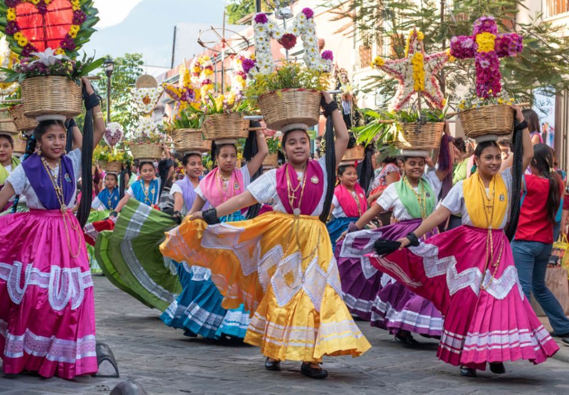
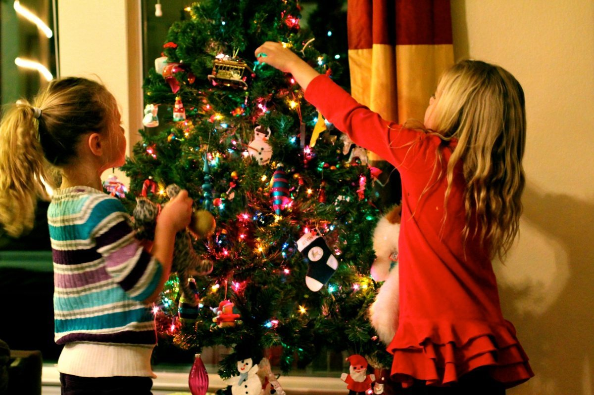

Tradiciones vs. costumbres

Tradición
Tradición es cada una de aquellas pautas de convivencia que una comunidad1 considera dignas de constituirse y mantenerse de generación en generación. Después de esto sigue como una parte integral de sus usos y costumbres y se mantiene para que sean aprendidas por las nuevas generaciones, como parte indispensable del legado cultural

Costumbre
Costumbre es un hábito o tendencia adquirida por la práctica frecuente de un acto. Las costumbres de la vida cotidiana son distintas en cada grupo social conformando su idiosincrasia distintiva, que, en el caso de grupos definidos localmente, conforman un determinado carácter nacional, regional o comercial.